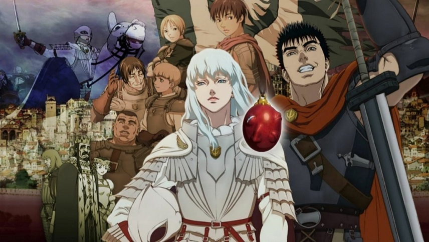
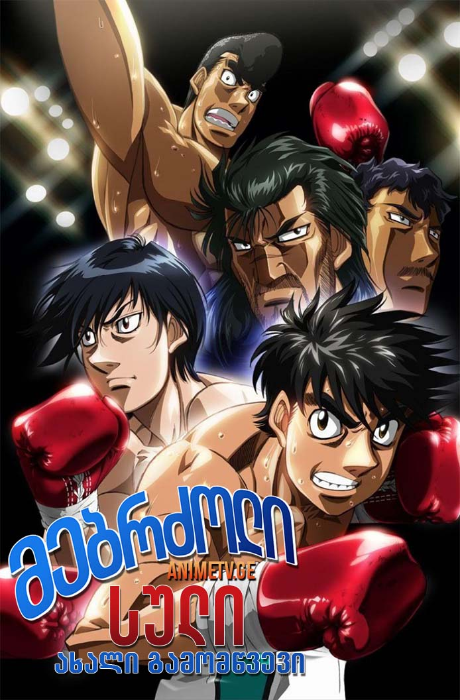
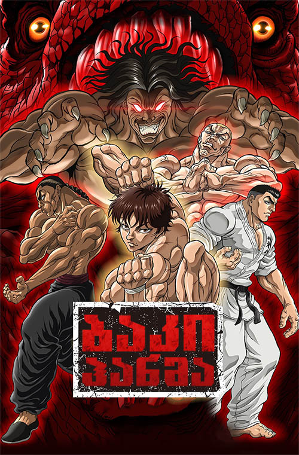

ანიმეები
ვინლანდის საგა ქართულად
Video Is not supported
Vinland Saga (Japanese: ヴィンランド・サガ, Hepburn: Vinrando Saga) is a Japanese historical manga series written and illustrated by Makoto Yukimura. The series is published by Kodansha, and was first serialized in the boys-targeted manga magazine Weekly Shōnen Magazine before moving to the monthly manga magazine Monthly Afternoon, aimed at young adult men. As of June 2023, its chapters have been collected in 27 tankōbon volumes. Vinland Saga has been licensed for English-language publication by Kodansha USA. The story is a dramatization of the story of Thorfinn Karlsefni and his expedition to find Vinland, with the majority of the story covering his fictional counterpart's transition from a bloodthirsty, revenge-filled teenager into a pacifistic young man; juxtaposed against this is the rise to power of King Canute, the journey of his own counterpart directly contrasting with that of Thorfinn's.
ბერსერკი ქართულად
Video Is not supported

Berserk (Japanese: ベルセルク, Hepburn: Beruseruku) is a Japanese manga series written and illustrated by Kentaro Miura. Set in a medieval Europe-inspired dark fantasy world, the story centers on the characters of Guts, a lone swordsman, and Griffith, the leader of a mercenary band called the "Band of the Hawk". The series follows Guts' journey seeking revenge on Griffith, who betrayed him and sacrificed his comrades to become a powerful demonic being. Miura premiered a prototype of Berserk in 1988. The series began the following year in Hakusensha's manga magazine Monthly Animal House [ja], which was replaced in 1992 by the semimonthly magazine Young Animal, where Berserk has continued its publication. Following Miura's death in May 2021, the final chapter that he worked on was published posthumously in September of the same year; the series resumed in June 2022, under supervision of Miura's fellow manga artist and childhood friend Kouji Mori [ja] and Miura's group of assistants and apprentices from Studio Gaga. Berserk was adapted into a 25-episode anime television series by OLM, which covered the Golden Age story arc, and was broadcast from October 1997 to March 1998. The Golden Age arc was also adapted into a trilogy of theatrical anime films; the first two films premiered in 2012 and the third film premiered in 2013. A second 24-episode anime television series adaptation was broadcast for two seasons in 2016 and 2017. By September 2023, the Berserk manga had over 60 million copies in circulation, including digital versions, making it one of the best-selling manga series of all time. It received the Award for Excellence at the sixth installment of the Tezuka Osamu Cultural Prize in 2002. Berserk has been widely acclaimed, particularly for its dark setting, storytelling, characters, and Miura's detailed artwork.
მებრძოლი სული
Video Is not supported

Hajime no Ippo (はじめの一歩, lit. "The First Step") is a Japanese boxing-themed manga series written and illustrated by George Morikawa. It has been serialized by Kodansha in the shōnen manga magazine Weekly Shōnen Magazine since October 1989, with its chapters collected into 140 tankōbon volumes as of February 2024. It follows the story of high school student Ippo Makunouchi, as he begins his career in boxing and over time obtains many titles and defeats various opponents. A 76-episode anime adaptation produced by Madhouse aired on Nippon TV from October 2000 to March 2002. A television film and an original video animation (OVA) were released in 2003. A second series titled Hajime no Ippo: New Challenger aired from January to June 2009. A third series Hajime no Ippo: Rising aired from October 2013 to March 2014. In North America, the first series, including the television film, was licensed by Geneon in 2003, which released it under the name Fighting Spirit. It was re-licensed by Discotek Media in 2020, including the television film and the OVA. By July 2023, the manga had over 100 million copies in circulation, making it one of the best-selling manga series of all time. In 1991, Hajime no Ippo won the 15th Kodansha Manga Award in the shōnen category.
ბაკი ქართულად
Video Is not supported

protagonist, Baki Hanma, trains with an intense focus to become strong enough to surpass his father, Yujiro Hanma, the strongest fighter in the world.